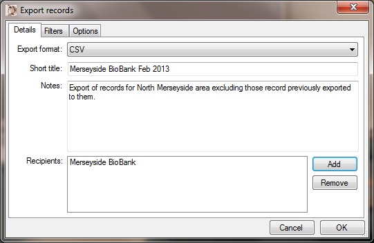
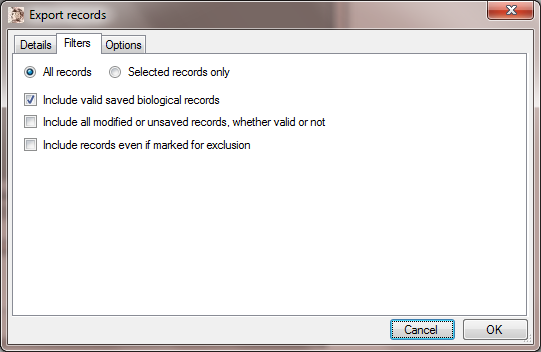
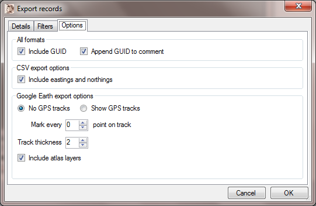
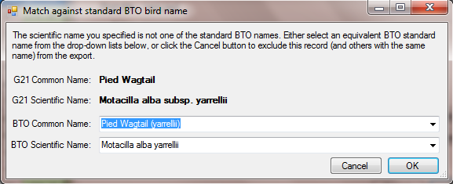

Gilbert 21 - the export records dialog
It is important to realise that any export you make will only operate on the records that are actually displayed in Gilbert 21 at the time you make the export. So exporting records starts first, with opening the records that will be exported from the Gilbert 21 database. You use the Open records dialog to do this. It is also important to remember that only the fields that are displayed in Gilbert will be exported. So, for example, if you are not displaying the Determiner field, then it will not be exported. You use the Gilbert 21 Options dialog to indicate which fields are displayed.
The Export records dialog is reached from the Export records item of the File menu. There are three tabs on this dialog and each is described below.
The Details tab

Use this tab to specify some metadata about the export and specify some of its characteristics. The most important characteristic that you have to specify is the export format. The export format is set from a drop-down list and can take any of the following values:
The Short title is the only item of metadata that you must specify for an export - the others are optional. The Short title you specify must be unique in the database and this is what will will presented to you whenever the export is referred to by Gilbert 21.
The Notes metadata item allows you to specify any information that you wish to accompany your record of the export. The date that the export was created is automatically recorded, so you needn't record that here, but anything else that you wish to record can go it.
The Recipients metadata item is where you can specify who the export file was sent to you. You can specify zero, one or more recipients here. It is not a free-text input field, but a list. To add a recipient to the list, you must click the Add button which will invoke the Export recipients dialog. You can use that dialog to select recipients that you have already created records for, or set up a new recipient and select that. To remove a recipient from the list of recipients for an export, just select it in the list and then click the Remove button.
The Filters tab

Remember that only those records shown on the main Gilbert 21 form will be exported. But you can use this tab to restrict the export further. Firstly you can restrict the export to only those actually selected on the main Gilbert 21 form. To do this select the Selected record only option. Otherwise, if the All records option is selected, the all the records shown on the main Gilbert 21 form are candidates for export.
If the Include valid saved biological records check-box is checked (which it is by default) then valid saved biological records are exported (coloured green by default). These are normally the records that you want to export to another organisation. Note that records which are explicitly marked by you to be excluded from export will not be included in the export (even if they are valid biological records) unless you check the box Include records even if marked for exclusion. If you want to include all records in the export, regardless of whether or not they are valid biological records, then check the check-box which says Include all modified or unsaved records, whether valid or not.
The options tab

The All formats section of the Options tab contains a couple of options pertaining to the Gilbert 21 record Global Unique Identifiers (GUID). Global Unique Identifiers uniquely identify a biological record and should help avoid record duplication in the biological records network if all biological recording packages used them and honoured those produced by other packages. It is good practice to export the GUIDs with your records and therefore, even if you do not have them displayed on the Gilbert 21 main form, they will be exported unless you un-check the Include GUID check-box. Of course, even if you export them, there's no guaranteed that they will be imported by whoever you send your records to. Therefore you can also append the GUID to your comment field - which is more likely to be imported by record recipients - by checking the Append GUID to comment check-box.
There is a CSV-specific option - Include eastings and northings - enables you to append the Easting and Northing of the centre-point of each record as extra columns to the exported CSV. This can be useful, particularly if the recipient is going to import the CSV into a GIS system, for example ArcGIS.
The Google Earth export options section includes options specific to Google Earth. You can specify that tracks - if available - are to be exported or not, how frequently intermediate track nodes (vertices) are to be marked and the track thickness in Google Earth. If you check the Include atlas layers box, then Gilbert 21 will generate 'atlas' style dot maps in your KML to show the distribution of the selected records at 10 km, 2 km and 1 km levels.
Cancel or OK
Click the OK button to actually carry out the export. Unless you have selected the None option for the export format, you will be required to specify a location and name for the exported file. The filepath you specify will be recorded as part of the metadata for the export. To cancel the export, use the Cancel button.
BirdTrack Casual
If you select this export type, you first need to specify on the Data options tab of the options dialog your BTO BirdTrack user name. That's because it is used to populate one of the fields in the export file. The BTO only accepts records of birds with certain names. Sometimes these might not match the scientific names you have used to store the record in Gilbert 21. If any record is found with a scientific name which is not in the BTO list, you are presented with a dialog where you can match the name. An example is shown below:

When this dialog first appears, the BTO Common Name field is blank, but as soon as you start typing, possible matching options are presented to you and you can hit enter (if there's only one) or click to select the one you want. Then select the OK button to remember the match. Once you've matched the name, it will be remembered for that export. So in the example above, you would only need to match Motacilla alba subsp. yarrellii to Motacilla alba yarrellii once and all occurrences of Pied Wagtail would be converted to the BTO preferred name in the export file.
In cases where you do not want to match and would prefer to remove all cases of a given G21 name from the export, use the Cancel button on the dialog.
A CSV file is generated as a result of this export. To import it into BirdTrack, you first need to open it in Excel and save it as an Excel 97-2003 workbook.
Created with the Personal Edition of HelpNDoc: Free HTML Help documentation generator